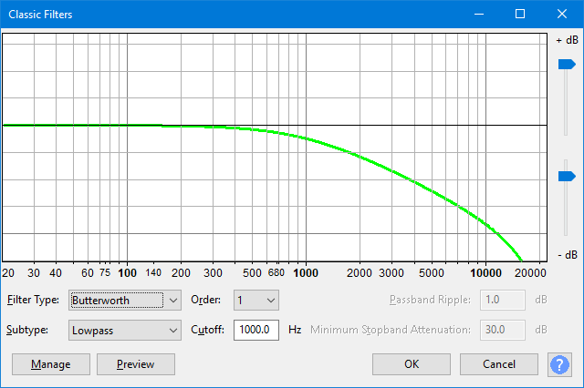

Classic Filters
Note carefully that when you apply an effect to a time-stretched clip the changed speed of the clip will be automatically rendered.
|
- Accessed by:
- 
Graph Scale and Sliders
- Vertical Scale: This scale is in dB and shows the amount of gain (amplification above 0 dB or attenuation below 0 dB) that will be applied to the audio at any given frequency.
- Horizontal Scale: This shows the frequencies in Hz to which volume adjustments will be applied. Dragging the Classic Filters window wider displays some additional points on the scale.
- Vertical scale sliders: By default the vertical scale reads from 0 dB to -10 dB, but these two sliders to left of the scale let you adjust the upper and lower dB values so as to change the visible range on the graph. Note that moving either slider may change the horizontal position of the 0 dB line.
Filter Type
- Butterworth: An analog Butterworth filter provides a "maximally flat" passband (ie. no ripples), the magnitude response at the cutoff frequency is -3 dB, and above (for lowpass) or below (for highpass) the cutoff frequency, the attenuation increases at approximately 6 dB per octave times the filter order (so for example 60 dB per octave for 10th order).
- Chebyshev Type I: Chebyshev Type I filters are similar to Butterworth filters, except that a) the magnitude response of the passband has "ripples" in it (usually small), b) at the cutoff frequency the magnitude response is equal to the ripple value, and c) above (below for highpass) the cutoff frequency, the stopband attenuation increases more rapidly, for a given filter order, than Butterworth.
- Chebyshev Type II: Chebyshev Type II filters are similar to Butterworth, including the flat passband response, except that a) at the cutoff frequency the magnitude response is equal to the ripple value, b) above (below for highpass) the cutoff frequency, the stopband attenuation increases more rapidly, for a given filter order, than Butterworth, and c) the stopband attenuation varies from infinite to the ripple value. (Here it is common to use a ripple value of 20, 30 or more dB).
Subtype
- Lowpass: The filter passes low frequencies and attenuates high frequencies.
- Highpass: The filter passes high frequencies and attenuates low frequencies.
Order
Choose a value between 1 and 10. "1" - first-order filters - have the most gradual cutoff slope
Cutoff
Enter the cutoff frequency.
Passband Ripple
- For Butterworth filters no value can be entered and any value displayed is ignored.
- For Chebyshev Type I filters type in the acceptable amount of passband ripple. Higher values of passband ripple will also increase the cutoff slope.
- For Chebyshev Type II filters no value can be entered and any value displayed is ignored.
Minimum Stopband Attenuation
- For Butterworth filters no value can be entered and any value displayed is ignored.
- For Chebyshev Type I filters no value can be entered and any value displayed is ignored.
- For Chebyshev Type II filters type in the desired amount of Stopband ripple.
| What is the "desired amount of Stopband ripple"? It is a trade off against what happens in the pass band, we don't 'desire' it, we put up with it for other advantages, it is an engineering compromise. Try changing it and look at the graph. How much Stopband attenuation do you need? |
Detailed background
"Butterworth and Chebyshev filters are polynomial filters, i.e., filters whose continuous-time attenuation is a polynomial in frequency.
Chebyshev filters are the polynomial filters that attain the highest possible transition slope for a given order and allowable attenuation in the pass band. This means that they provide a specified selectivity at minimum cost. This property has made them very popular in analog filtering, such as anti-aliasing filters. Their attenuation exhibits some ripple at the pass band.
Butterworth filters are the polynomial filters that, having monotonous attenuation (no ripple) with frequency, provide the flattest frequency response in the pass band.
Chebyshev Type II filters are an intermediate between Butterworth and Chebyshev (also known as Chebyshev type I), since they have no ripple in the pass band, the same as Butterworth, buy they have higher transition slope. However, they present some "ripple" at the stop band, since the attenuation falls several times to a specified value (in the case of odd order, that value is finally reached at very high frequencies)
There are two areas where these kinds of filters may prove useful in digital signal processing. The first one is to simulate the behavior of the corresponding analog filter, particularly when investigating its transient response.
The second one is when it is necessary to implement real-time or low-latency IIR (infinite impulse response) filters. While FIR (finite impulse response) filters are capable of achieving a more accurate frequency response with low phase distortion, they usually require high orders to attain the desired selectivity, and high order implies long delay, i.e., high latency. Particularly, FIR filters based on FFT (such as the one implemented in the Equalization effect) are excellent and extremely flexible, but their computational cost is very high and they require N samples just to start yielding any output. IIR filters provide output immediately. Octave band and On third octave band filters for measurement purposes are usually implemented with IIR filters.
If post-processing audio and computation time is not an issue, do not use classic filters since the Equalization effect will provide a better result."